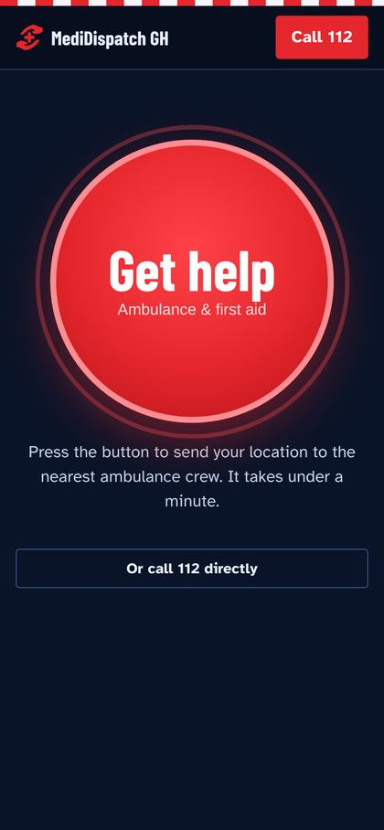
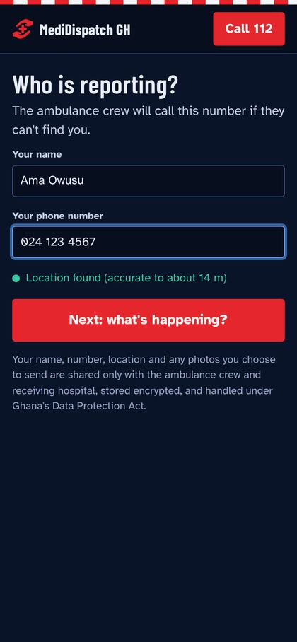
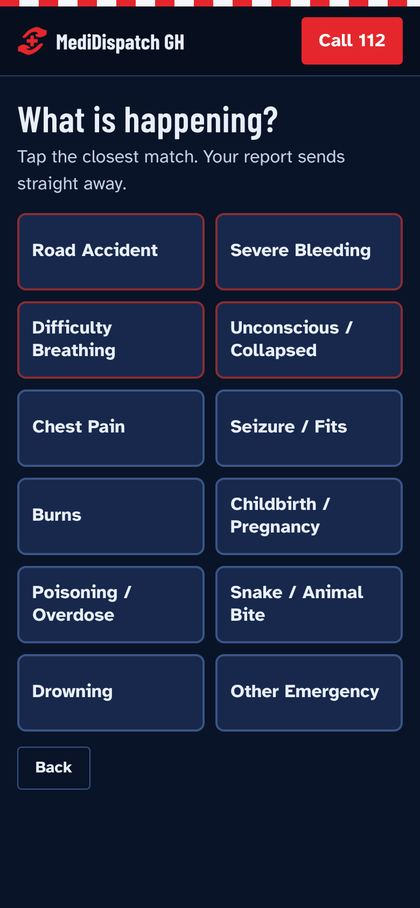
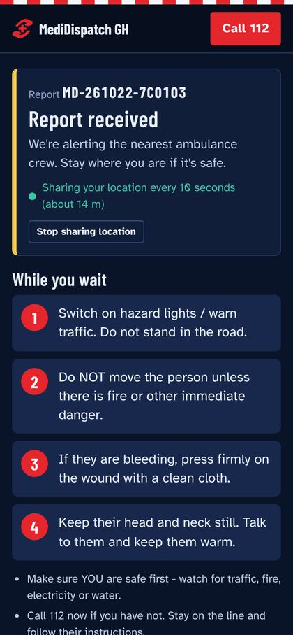
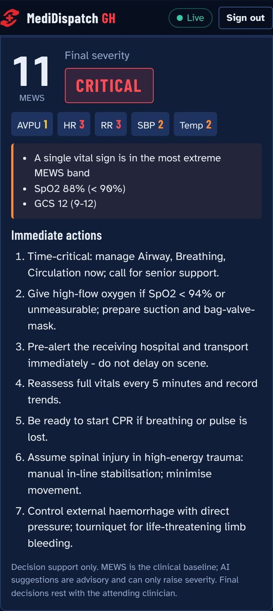
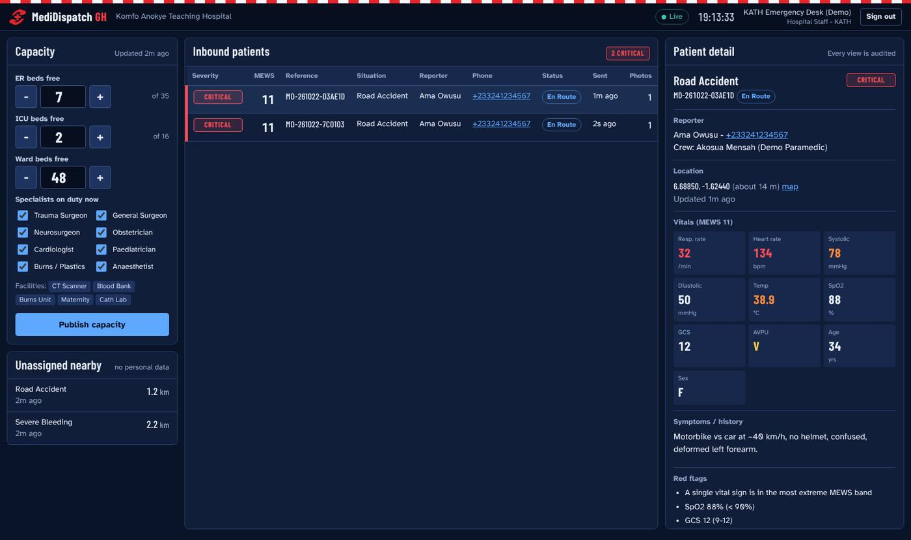

Minutes
decide who
lives.
MediDispatch sends the nearest ambulance to the patient and the patient to a hospital with a free bed — with the crew and the hospital already talking before anyone arrives.
One big red button. No account needed.
The crew calls this number if they can’t find you.
Tap the closest match.
Motorcycle vs car, ~40 km/h. No helmet, confused.
Pre-alerted with vitals, 6 min out.
The harm happens before the hospital
Ghana’s roads, ambulance service and hospital doors each add delay. MediDispatch was built around the measured failures, not a guess at what might help.
people killed in road crashes in 2024, up from 2,276 in 2023. About seven people a day.
WHO’s modelled estimate is about three times the official count.
of reviewed trauma deaths at Komfo Anokye Teaching Hospital were preventable — 23% definitely, 37% potentially.
of those preventable deaths had delay before reaching hospital as the key failure. It was the most common cause.
median ambulance transport time in Greater Accra — already past the “golden hour” for trauma.
A fleet that grew fast — and is stretched thin
Ghana went from 9 ambulances to 356, with a station in all 261 districts. The dispatch maths still doesn’t add up when every crew is already committed.
average response in 2025, against a 20-minute target
calls with no response in 2025 — 12.6% of 42,154
ambulances out of service in Feb 2026 (40%)
of 2022 trips were hospital transfers, not emergencies
ambulances for all of Greater Accra in June 2025
ambulances between 2004 and today. NAS plans 400 more ambulances and 500 motorbike response units — MediDispatch makes sure each one is sent to the right patient first.
of 1.9 million calls to Ghana’s 112 line in early 2020 were pranks. Only 15,801 were genuine.
The Fire Service still logged 131,862 prank calls in Q1 2025. Each one ties up a dispatcher while a real patient waits.
“No bed syndrome” has been fatal
- 3 hrsA hit-and-run victim in Accra died after being turned away from three hospitals for lack of beds.
- 6–7Hospitals that refused a 70-year-old man in 2018 before he died in his car.
- 4ICU beds at Tamale Teaching Hospital serving the whole Northern Region — all full when a referred patient arrived in April 2025.
women died giving birth in Ghana’s health facilities in 2025 — about 122 per 100,000 live births. Counting deaths outside facilities, the national figure is 275.
Haemorrhage is the leading cause
Heavy bleeding kills in hours. MediDispatch routes childbirth emergencies to hospitals with an obstetrician, a maternity unit and a blood bank — and alerts them before arrival.
One system connects the three people who decide whether a patient lives
No new hardware. A bystander needs no account, a crew signs in on a phone, a hospital watches a desktop queue.
Bystander
- One big red button
- Name, phone and situation in under a minute
- GPS shared every 10 seconds
- First-aid steps that work offline
- Optional photo, with consent
Paramedic
- Nearest reports, sorted by distance
- One tap to claim a case
- Vitals in, severity score out
- Best hospital suggested by travel time and capability
Hospital
- Live queue of incoming patients
- Vitals, location and photos before arrival
- Publishes free beds and specialists on duty
From a stranger’s phone to a dispatched crew in four screens
Every screen below is the working prototype, not a mock-up.






Every feature answers a measured problem
No feature exists because it looked good on a slide. Each one maps to a documented failure in Ghana’s emergency chain.
| The problem | What MediDispatch does |
|---|---|
| 44%of preventable trauma deaths involve pre-hospital delay | Live GPS to the nearest crew; one-tap claim so two crews never chase the same patient |
| 12.6%of emergency calls got no response in 2025 | Severity score puts the sickest first when ambulances are scarce |
| 99%of 112 calls were pranks in early 2020 | Every report carries a name, callback number and GPS, and reports are rate-limited |
| 3 hrsspent searching for a free bed | Hospitals publish beds and specialists live; full hospitals are skipped |
| #1killer in trauma and childbirth is bleeding | Matching prefers a blood bank, trauma surgeon or obstetrician; the hospital is pre-alerted with vitals |
| 42%of trained drivers stopped bleeding at crashes, up from 4% | Plain-language first-aid steps for 12 situations, available offline |
The AI can raise the alarm. It can never lower it.
Clinical triage stays with a fixed formula. The model is an extra pair of eyes that can only make the call more urgent — never less.
MEWS score
A fixed medical formula from five vital signs. Always calculated. This is the baseline.Local AI
Llama 3.2 3B reads the vitals and the paramedic’s notes — such as “pregnant, heavy bleeding” — and suggests a severity.If the AI is offline, slow or gives a bad answer, the system uses MEWS alone. In testing, that fallback answered in 0.02 seconds.
- 2,400real cases: every AI model tested did significantly worse than doctors and often ignored guidelines.Nature Medicine 2024
- 76.6%triage accuracy for ChatGPT against an expert panel — wrong about one time in four.Scientific Reports 2024
- 4.6%of patients under-triaged by the best model in a 2026 study, judged “not ready for clinical use”.JMIR Medical Informatics 2026
- 5.4×higher odds of death at a MEWS of 5 or more — yet MEWS alone misses context, scoring 0.67 AUROC in African febrile adults.QJM 2001; EClinicalMedicine 2024
Why the AI runs on our own server in Ghana
An emergency system cannot depend on a cable under the Atlantic, or on a vendor’s terms of service.
It works when the internet doesn’t
On 14 March 2024 all four subsea cables linking Ghana to Europe were cut; the NCA estimated about five weeks to restore. A cloud AI would have gone dark. A local one keeps working.
Patient data stays in Ghana
The Data Protection Act treats health data as special personal data. In April 2026 Ghana turned down a US$109 million health deal over demands for health data. Nothing here leaves the country.
“We must not only use AI, we must localise AI.”
President Mahama, launching the National AI Strategy 2025–2035 and a national AI Computing Centre.
It is cheap to run
The model file is 2.02 GB and runs on an ordinary server. No per-use fees, no foreign-currency bills, no vendor lock-in. It can be audited and tested on Ghanaian cases.
Built, tested and ready for a pilot
The prototype has been run end to end in a browser, on two databases, and against hundreds of random cases.
automated tests passing on both SQLite and PostgreSQL 16
- Full flow tested in a browser: report, claim, triage, hospital alert
- 400 random cases confirm the AI never lowers severity
- Encrypted names, phone numbers, locations, vitals and photos
- Audit log of every record viewed; cannot be edited or deleted
- Photos deleted automatically after 30 days
- Works offline for bystanders; reports send when signal returns
- Role-based access: a paramedic cannot open the admin portal
- Docker deployment with PostgreSQL, Redis and Nginx
Status: working prototype. It is not yet cleared for clinical use. Clinical sign-off, validation on Ghanaian patients and a security review come next.
What it takes to put MediDispatch on Ghana’s roads
- Clinical sign-offReview of first-aid steps, MEWS thresholds and AI rules by NAS and Ministry of Health clinical leads.
- Validate the AITest on real Ghanaian cases and monitor how often it raises severity.
- Regional pilotRun alongside NAS dispatch in one region, with verified hospital and bed data.
- Reach everyoneAdd SMS and USSD reporting for the quarter of Ghanaians who are not online.
- Secure and registerIndependent security review and registration with the Data Protection Commission.
A pilot partnership with the National Ambulance Service and the Ghana Health Service, to test MediDispatch in one region.